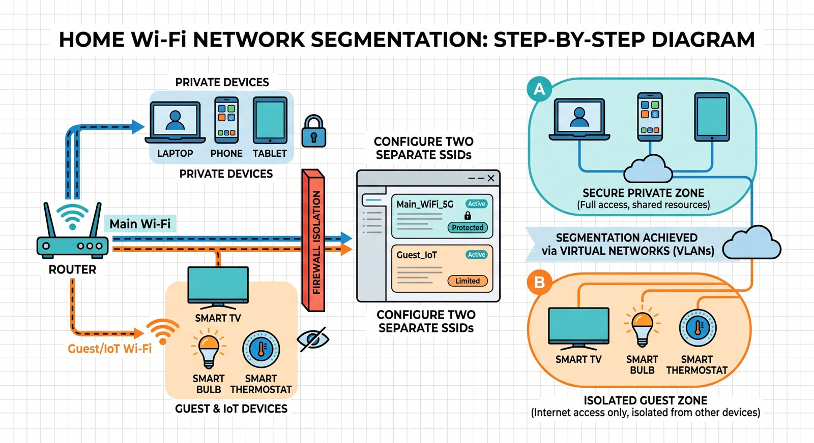

The “Zero-Trust” Home Network: How to Isolate Your Smart Devices in Under 30 Minutes
Imagine buying a $15 smart plug online, plugging it into your wall, and unknowingly handing a hacker the keys to your bank account.
It sounds dramatic, but it happens every single day.
When you connect a cheap smart TV, Wi-Fi security camera, or smart bulb to your primary Wi-Fi network, it sits right next to your personal laptop, tax files, and family photos. If an attacker compromises that unpatched smart plug, they don’t just control your lights—they can pivot across your home network directly into your computer.
The solution used by corporate giants and cyber experts alike? Zero-Trust Network Segmentation.
Here is how you can set it up at home in under 30 minutes—no IT degree required.
What Is “Zero-Trust” (and Why Do You Need It)?
Traditional home Wi-Fi operates like a castle with a moat: a strong Wi-Fi password keeps bad guys outside, but once inside, everyone has free access to every room.
Zero-Trust flips this logic on its head: “Never trust, always verify.”
By dividing your Wi-Fi network into isolated zones, a hacker who breaks into your smart bulb gets trapped in a digital container, completely blocked from reaching your personal devices.

The 30-Minute Lockdown: 3 Easy Steps
Step 1: Divide Your Devices (5 Minutes)
Grab a piece of paper and split your home gadgets into two distinct lists:
- High-Trust Devices: Laptops, smartphones, tablets, primary backup drives.
- Low-Trust Devices: Smart TVs, smart plugs, Wi-Fi cameras, streaming sticks, gaming consoles.
Step 2: Turn On Your Guest Network (10 Minutes)
You don’t need expensive enterprise hardware to segment your network. Almost every modern router has a built-in feature called Guest Network:
- Log into your router’s admin page (usually 192.168.1.1 or 192.168.0.1 in your browser).
- Look for Guest Network Settings and turn it on.
- Rename the SSID to something like Home_IoT or MyHome_Guest.
- Set a strong password.
Step 3: Enable “Client Isolation” & Reconnect (15 Minutes)
In your router’s Guest Network settings, look for an option named “AP Isolation” or “Client Isolation” and make sure it is turned ON. If your router instead offers “Allow guests to see each other,” make sure that one is turned OFF. This prevents smart devices from communicating with each other.
- Move all your Low-Trust Devices over to the new Guest Wi-Fi network.
- Keep your High-Trust Devices on your main Wi-Fi.
The Bottom Line
Congratulations! Even if a cheap smart gadget gets compromised, the attacker is completely walled off from your private data. You’ve successfully implemented enterprise-grade security right in your living room.